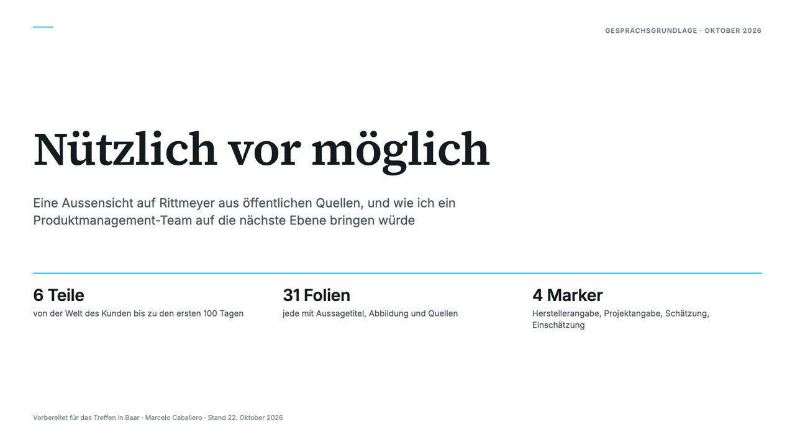

Rittmeyer AG · BRUGG Group
Rittmeyer: Nützlich vor möglich
Eine Aussensicht auf Rittmeyer aus öffentlichen Quellen: eine Präsentation als Gesprächsgrundlage und drei Erklärvideos mit Ton und einschaltbaren Untertiteln. Falls der Ton nicht läuft: Untertitel über das Player-Menü einschalten oder den Sprechtext unter dem Video lesen.
Präsentation: Nützlich vor möglich

Disclaimer: Entwurf, mit KI-Hilfe erstellt.
Teil 3: Nützlich vor möglich
Disclaimer: Entwurf, mit KI-Hilfe erstellt.
Sprechtext lesen
0:00In der Schweiz versorgt ein Vollzeitmitarbeiter einer Wasserversorgung im Durchschnitt 2800 Einwohner. Und seit April 2025 muss ein Cyberangriff auf diese Versorgung innerhalb von 24 Stunden gemeldet werden. Das ist kritische Infrastruktur. Wenig Personal, hohe Verantwortung, keine Fehlertoleranz.
0:22Rittmeyer, Teil drei. Nützlich vor möglich. Ein Blick von aussen in vier Schritten: was kritische Infrastruktur verlangt, was Rittmeyer heute kann, was andere tun, und wie ein Produktteam die nächsten Schritte gehen kann.
0:38Zuerst die Ausgangslage.
0:41Der Bund zählt neun Sektoren und 27 Teilsektoren zur kritischen Infrastruktur. Und er zählt jedes Element dazu, das in einem dieser Teilsektoren Leistungen erbringt. Auch das Leitsystem einer kleinen Gemeinde.
0:56Die Wasserversorgung hat dabei die höchste Kritikalitätsstufe, weil niemand auf Wasser verzichten kann und es sich kurzfristig nicht ersetzen lässt.
1:05Diese Infrastruktur ist kleinteilig. Rund 2400 eigenständige Wasserversorgungen. Über die Hälfte der Fassungen versorgt Gemeinden mit weniger als 2000 Einwohnern. Rund 700 Kläranlagen, 60'000 Kilometer Kanalisation. 706 Wasserkraftzentralen, die rund 58 Prozent des Schweizer Stroms liefern.
1:28Sie ist alt. Die Blütezeit des Wasserkraftausbaus lag zwischen 1945 und 1970.
1:37Sie ist reguliert. In Deutschland gelten seit Dezember 2025 die NIS-2-Regeln und seit März 2026 das KRITIS-Dachgesetz, das seit Juli ausdrücklich auch Software und IT-Dienste als Anlagen zählt, wenn sie physische Prozesse steuern.
1:55Sie ist gestresst. Der Hitzesommer 2026 war ein Stresstest. Kleine Quellversorgungen mussten schliessen.
2:03Und sie steht vor Investitionen. Allein die 130 grössten Kläranlagen brauchen bis 2040 rund 1,2 Milliarden Franken für die Stufe gegen Mikroverunreinigungen.
2:19In dieser Welt arbeitet Rittmeyer seit 1904. Rund 70 Millionen Franken Umsatz, über 300 Mitarbeitende, 20'000 installierte Lösungen. 61 Prozent des Umsatzes in der Schweiz, 15 Prozent in Österreich.
2:36Zwei Geschäfte. Das Produktgeschäft: eigene Messtechnik, international. Das Projektgeschäft: Automatisierung bestehender Anlagen, vor allem im deutschsprachigen Raum.
2:48Im Zentrum der Messtechnik steht RISONIC. Ultraschall-Laufzeitmessung mit bis zu 20 Pfaden, in Rohren mit über zehn Metern Durchmesser. Genauigkeit laut Hersteller bis 0,5 Prozent im Betrieb, bis 0,16 Prozent unter Idealbedingungen, abgenommen nach IEC 60041.
3:09Ein Gerät, vier Anwendungen: Durchfluss, Turbinenwirkungsgrad, Leckerkennung in Druckleitungen, Sedimentmonitoring.
3:18Dazu die IoT-Schicht. RITARK, autonome Sensoren mit bis zu zehn Jahren Stromversorgung. RICITY, Logger und Cloud mit Leckage-Erkennung per Machine Learning. WaterShield für die Früherkennung von Qualitätsabweichungen.
3:34Darüber die Leittechnik. RITOP, das modulare SCADA-System, lokal, virtuell oder in der Cloud. Und RITUNE, die Datenplattform, die mit KI und Statistik Daten plausibilisiert und Prozesse optimiert.
3:50Die Cloud steht in Schweizer Rechenzentren. In Pian Scariolo im Tessin läuft erstmals eine Kläranlage mit Leitsystem und Optimierung vollständig in der Cloud.
4:04Wie KI in kritischer Infrastruktur reift, zeigt die Kläranlage Nürtingen. RITUNE überwacht Sensoren und Pumpen und optimiert das Schlammalter. Die Empfehlungen wurden zuerst von Hand an den Schiebern umgesetzt. Dann wurden die Schieber automatisiert, damit RITUNE künftig über das Leitsystem steuert. Erst Empfehlung, dann Vertrauen, dann Automatisierung.
4:27Im Kanalnetz geht Rittmeyer den letzten Schritt bereits. Die prädiktive Verbundsteuerung läuft im Normalbetrieb autonom, mit laut Hersteller bis zu 30 Prozent weniger Überlauf.
4:40Andere Länder stehen vor denselben Aufgaben: wenig Personal, alte Anlagen, mehr Regulierung. Sechs Beispiele zeigen, wohin die Branche geht.
4:51Singapur hat seinen Wasserverlust von 11 auf 5 Prozent gesenkt. Mit tausenden Sensoren und einem täglich neu kalibrierten digitalen Zwilling, der Lecks auf unter einen Kilometer eingrenzt.
5:03Aarhus produziert in seiner Kläranlage Marselisborg 150 Prozent der Energie, die sie verbraucht, und deckt damit rund 90 Prozent des Energiebedarfs des gesamten Wasserkreislaufs.
5:16England und Wales verpflichten die Versorger per Regulator zu 17 Prozent weniger Leckage bis 2030 und 50 Prozent bis 2050. Wer verfehlt, zahlt an die Kunden zurück. Bisher fast 135 Millionen Pfund.
5:34Barcelona baut digitale Zwillinge für Pumpstationen und Netz. Und in Katalonien zeigt ein Projekt, wohin Assistenten gehen. Ein Betreiber fragt in natürlicher Sprache, ein Agent liest in allen Systemen, nur lesend. Aus 17 Minuten über vier Systeme werden 25 Sekunden, mit 93 Prozent korrekten Antworten.
5:55Vitens in den Niederlanden führt einen lebenden digitalen Zwilling mit rund fünf Prozent Abweichung und nutzt ihn, um neue Mitarbeitende schneller auszubilden. Wissenserhalt ist dort das Kernproblem.
6:08Berlin lässt KI die Kanalinspektion vorerfassen, mit über 80 Prozent Trefferquote. Die Fachleute korrigieren.
6:17Der Markt wächst, laut Schätzung auf 55 Milliarden Dollar bis 2030. Und Energie macht 11 bis 40 Prozent der Betriebskosten aus. Dort liegt der klarste Business Case.
6:31Und was bauen die grossen Anbieter, an denen sich Rittmeyer messen muss?
6:36Siemens hat 2026 Werkzeuge für Wasserqualität und Kläranlagen mit digitalem Zwilling vorgestellt und zählt über 100 Kunden für seinen Industrial Copilot. Der Wartungs-Copilot senkt laut Siemens die reaktive Wartungszeit in Piloten um 25 Prozent.
6:55Xylem baut mit Xylem Vue eine herstellerunabhängige Plattform mit KI-Assistent und schreibt über Agenten mit Governance. Ausdrücklich auch, um das Wissen von Mitarbeitenden vor der Pensionierung zu bewahren.
7:08Andritz überwacht mit Metris ein Kraftwerk im Kongo über 452 Diagnose-Indikatoren und erkennt Risse in Laufrädern früh. Voith hört mit OnCare Acoustic Anomalien in Kraftwerken.
7:21Reifegrad, ehrlich eingeordnet. Zwillinge, Energieoptimierung und Predictive Maintenance sind produktiv. Copiloten stehen am Anfang. Agenten in der Betriebstechnik sind Konzept und Pilot.
7:35Was heisst das für Rittmeyer?
7:38Eine Einschätzung. Rittmeyers Stärken: Messtiefe auf Normniveau, Leitsystem und Datenplattform aus einer Hand, Schweizer Cloud, eine grosse installierte Basis. Die Lücken: kein sichtbarer Copilot, keine kommunizierte Zwillingsstrategie, mehrere Plattformnamen nebeneinander, keine sichtbaren Abo-Modelle.
7:59Und ein Vorteil, den die Grossen nicht haben. Siemens kommt von der Fabrik, Xylem vom Grossversorger. Rittmeyers Kunde ist die Gemeinde mit einem Mitarbeiter für 2800 Einwohner. Für sie zählt ein souveräner, einfacher, betreuter Service mehr als eine Plattform.
8:21Daraus folgt eine Roadmap in drei Horizonten. Eine Einschätzung, gedacht als Hypothesen, nicht als Featureliste.
8:30Null bis zwölf Monate. Erstens ein Wissens-Copilot für Betreiber. Handbücher, Alarme, Betriebsprotokolle, nur lesend, mit menschlichem Gegenüber. Zweitens ein Datenqualitätsdienst, der die Plausibilisierung von RITUNE auf alle RITARK- und RICITY-Daten anwendet. Denn das Problem ist nicht der Mangel an Daten, sondern der Mangel an nutzbaren Daten. Drittens, intern, KI-gestütztes Anforderungs- und Ausschreibungsmanagement.
8:58Ein bis drei Jahre. RITOP und RITUNE als Service für kleine Versorger, mit eingebautem Nachweis für die 24-Stunden-Meldepflicht. Turbinen- und Pumpenwirkungsgrad als Service auf RISONIC-Basis, international, weil Energie den klarsten Business Case hat. Und der Nürtingen-Pfad als Standard: Empfehlung, Vertrauen, geschlossener Regelkreis.
9:21Drei bis fünf Jahre. Modellprädiktive Verbundsteuerung über Anlagengrenzen hinweg. Und die Fähigkeit, an eine nationale Wasserdatenplattform anzudocken, die Rittmeyer in seinem eigenen Whitepaper fordert.
9:39Wer das umsetzt, ist ein Team von vier bis fünf Produktmanagern. Drei Hebel: Menschen, Prozesse, Werkzeuge.
9:48Menschen. KI-Kompetenz, verbunden mit dem gruppenweiten Programm der BRUGG IT. Jede Person verantwortet ein Segment und ein Ergebnis.
9:58Prozesse. Wöchentliche Discovery mit Betreibern. Eine Portfolio-Review mit drei Kennzahlen: Anteil Wartung gegen Innovation, Dauer der Discovery-Zyklen, Time-to-Market. Und eine Ergebnis-Roadmap statt einer Featureliste, weil vorhersagbare Featurelisten das Lernen behindern.
10:17Werkzeuge. Ein gemeinsamer, regelgebundener KI-Arbeitsbereich. Hier bringe ich etwas Eigenes mit. Seit Januar 2026 arbeite ich täglich mit einem eigenen KI-Arbeitssystem, gebaut für genau diese Disziplin. Jede Korrektur wird eine Regel. Jede Regel wird ein Gate. Jede Aussage braucht einen Beleg, sonst wird sie blockiert.
10:41Die Wahrheit kommt zuerst aus dem laufenden System, dann aus Dateien, dann aus dem Gedächtnis, zuletzt aus dem Web. Und keine Daten verlassen die Maschine. Genau das, was kritische Infrastruktur verlangt.
10:56KI ist eine Methode. Manchmal ist die lineare Regression die richtige Antwort.
11:02Jeder Agent braucht ein menschliches Gegenüber.
11:06Schnell genug, um nicht zurückzufallen. Langsam genug, um zu lernen.
11:12Vom Sensor zur Einsicht.
11:15Und die Menschen bleiben am Steuer.
Teil 1: Rittmeyer und die BRUGG Group
Disclaimer: Entwurf, mit KI-Hilfe erstellt.
Sprechtext lesen
0:00Rittmeyer AG, gegründet 1904 in Baar. Seit über hundert Jahren Messtechnik und Daten für Wasser und Energie.
0:10Rittmeyer ist eine von sieben Einheiten der BRUGG Group und gehört seit 1979 dazu. CEO Roger Amhof sitzt in der Konzernleitung der Gruppe. Über das Joint Venture Rittmeyer aqotec ist Rittmeyer zudem in der Fernwärme aktiv, mit Wärmeübergabestationen und Regelungen.
0:30BRUGG begann 1896 als Kabelwerk. Heute zählt die Energiewende, mit der Strategie BRUGG 2028. Kontrolliert von der Familie Suhner.
0:422025 erzielte die Gruppe 646 Millionen Franken Umsatz, mit rund 2270 Mitarbeitenden. Rittmeyers Umsatz wird nicht veröffentlicht.
0:55Rittmeyer selbst hat rund 290 Mitarbeitende und über 20000 Installationen weltweit. Tätig ist es ausserhalb der Schweiz in Europa, Amerika und Indonesien. 2025 waren die Aufträge solide und Amerika wuchs, in Asien wurden die Ziele verfehlt.
1:15Kunden sind Stadtwerke, Kantone, Industrie und Kraftwerke, von Trinkwasser über Abwasser und Wasserkraft bis Fernwärme. Referenzen reichen von Abwasserzentralen in Liechtenstein bis zu Sensoren für A2A in Italien. Die Spezialität: Wasserkraft und grosse Talsperren.
1:35Rittmeyer deckt die ganze Kette ab. Instrumente messen Durchfluss und Pegel. Energieautarke IoT-Sensoren senden die Daten. Das Leitsystem RITOP steuert die Anlagen. Die Plattform RITUNE läuft in einer Schweizer oder EU-Cloud. WaterShield und RISOURCE machen daraus Analysen. Service und Fernwärme über Rittmeyer aqotec ergänzen das Angebot.
2:00Die wichtigsten Wettbewerber sind Siemens, ABB und Xylem. In der Schweiz arbeiten regionale Integratoren oft auf Plattformen von Siemens oder Schneider.
2:12Kunden kämpfen mit Trockenheit und Starkregen, verstreuten Daten, kleinen Teams und strengeren Regeln zur Cybersicherheit. Rittmeyer und BRUGG haben eigenen Druck: flaches Wachstum, Abhängigkeit von Europa, verfehlte Ziele in Asien und wenig Grösse neben Siemens und ABB.
2:32Hier setzt KI an: angewandt, sicher und nachvollziehbar. RITUNE prüft Daten auf Plausibilität und findet Optimierungspotenzial. WaterShield warnt früh bei Abweichungen der Wasserqualität. Im Forschungsprojekt RECYBA findet ein neuronales Netz von Rittmeyer Energieverschwendung. Für den CEO zählt KI erst mit echtem Kundennutzen.
2:55Digital ist die ganze Gruppe: Fatzer mit dem digitalen Seilzwilling, Geobrugg mit Guard-Sensoren, BRUGG Lifting mit digitalem Service.
3:05Rittmeyer ist die Dateneinheit von BRUGG. Vom Sensor zur Erkenntnis.
Teil 2: KI, wo das Wasser fliesst
Disclaimer: Entwurf, mit KI-Hilfe erstellt.
Sprechtext lesen
0:00Jeden Tag erfassen Wasserversorger riesige Datenmengen: Pegel, Durchflüsse, Pumpen, Drücke. Doch vieles davon wird nie ausgewertet. Nicht aus Desinteresse, sondern weil die Zeit fehlt.
0:14Dies ist Teil zwei unseres Blicks auf Rittmeyer, den Schweizer Spezialisten für Wasser- und Energieautomation in der BRUGG Group, mit Sitz in Baar. Diesmal geht es um eine Frage: Wie nutzt Rittmeyer künstliche Intelligenz?
0:30Rittmeyers Antwort ist bewusst praktisch: KI soll sicher, nachvollziehbar und nützlich sein. Im Fokus stehen Wasserqualität, Anlagenoptimierung, Datenanalyse und digitale Assistenten. Und in der BRUGG Group entsteht ein KI-Programm mit eigenen Rollen für Governance und Technologie.
0:50Der erste Baustein ist RITUNE. RITUNE sammelt Daten aus Leitsystemen, Wetterstationen und Betriebsprotokollen und prüft mit KI und Statistik, ob die Werte plausibel sind. Es erkennt Anomalien in Echtzeit und macht aus Mustern Empfehlungen. In der Kläranlage Nürtingen setzt das Personal diese Empfehlungen noch von Hand um. Die KI schlägt vor. Der Mensch entscheidet.
1:16Für das Trinkwasser gibt es WaterShield. Es verknüpft mehrere Qualitätswerte und verfolgt ihre Trends. So fallen ungewöhnliche Veränderungen früh auf, und der Betrieb kann rechtzeitig reagieren.
1:30Dann gibt es Richi, einen virtuellen Mitarbeiter für Kanalnetze. Richi entstand von 2020 bis 2022 mit dem Wasserforschungsinstitut Eawag, dem Ingenieurbüro Hunziker Betatech und zwei Schweizer Abwasserverbänden, gefördert von Innosuisse. Richi arbeitet mit rund hundert physikalischen und empirischen Regeln. Er soll Pumpen und Pegel analysieren, unerwünschtes Grundwasser im Kanal erkennen und per Chat, im Leitsystem oder per Mail berichten. Seine Aufgabe ist die Datenarbeit, die niemand machen will.
2:04Bei Starkregen laufen Kanäle in Flüsse und Seen über. Zusammen mit dem Partner RTC4Water verbindet Rittmeyer Regenbecken zu einem virtuellen Netz. Ein vorausschauender Regler entscheidet, wohin das Wasser fliesst, im Normalbetrieb voll autonom. Das Ergebnis laut Rittmeyer: bis zu dreissig Prozent weniger Überlauf an den Becken.
2:27In der Forschung geht Rittmeyer weiter. Im Projekt RECYBA mit der Hochschule Magdeburg-Stendal und Avacon Wasser hilft ein neuronales Netz von Rittmeyer, Energieverschwendung in Kläranlagen zu finden. Es vergleicht jede Anlage mit ähnlichen und zeigt, wo diese effizienter laufen. Die Forschenden halten bis zu achtzig Prozent Einsparung für möglich. Das ist eine Schätzung, noch kein Ergebnis.
2:52All das braucht zuerst eine solide Datenbasis. Rittmeyer betreibt bereits ganze Leitsysteme in der Cloud, bereitet Daten KI-fähig auf und setzt sich für eine offene nationale Wasserdatenplattform der Schweiz ein.
3:08Eine ehrliche Anmerkung: Nicht alles, was KI heisst, ist maschinelles Lernen. Vieles sind Regeln, Statistik und Optimierung, und genau das braucht kritische Infrastruktur oft. Rittmeyers Weg: vom Sensor über die Daten zur Erkenntnis. Der Mensch behält die Kontrolle.